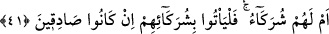

hangisi savunacak?” “Savunacak” şeklinde tercüme ettiğimiz “za’îm” kelimesi, “bir
şeyi, bir işi düzeltmek üzere ortaya çıkan kişi” demektir. Tıpkı insanların işlerini ıslah
etmek üzere bir topluluğun önüne geçen öndere “zaîm” dendiği gibi. “Bi zâlike”
kelimesi, “zaîm” kelimesine bağlıdır. “Zaîm” ise bir başka açıklamaya göre “herhangi
bir iddiâyı ileri süren ve onu desteklemek üzere delil getiren kimse” demektir.
Râğıb İsfahânî’nin yaptığı açıklamaya göre; “zaîm” kelimesi ya “kefâlet” anlamına
gelen “zeâmet”ten türemiştir, ya da “söz” anlamına gelen “za’m”den türemiştir.
Arapçada “za’m”, yalana ihtimâli olan bir söz iddiâ etmek demektir. Bu nedenle,
insanın yalan söylemesinin muhtemel olduğuna inanıldığı için başkasına kefil olan
kişiye ve bir topluluğun liderine Arapçada “zaîm” denmiştir.
41. Yoksa ortakları mı var onların? Sözlerinde doğru iseler, hadi getirsinler
ortaklarını!
“Yoksa” bu sözü söylerken kendilerine katılan ve onların gittikleri yolda giden
“ortakları mı var onların? Sözlerinde” bu iddiâlarında “doğru iseler, hadi getirsinler
ortaklarını!”
“Bi şürekâihim” ifâdesinin başındaki “ba” harfi, ta’diye yâni fiili geçişli yapmak
içindir. Bu harfin musâhabe için olması da mümkündür. Âyette “iddiâlarında doğru
iseler” dendi. Bu ifâde, “hiç değilse bir başkasını taklîden olsun iddiâlarında doğru
iseler hadi getirsinler ortaklarını” demektir. Bir başka açıdan burada şöyle denmiş
olmaktadır: “Size ne oluyor, nasıl hüküm veriyorsunuz” âyetinde ifâde olunduğu üzere,
iyi ile kötünün bir olacağı yolundaki görüşlerini isbat noktasında onların akli bir
delilleri olmadığı gibi, ellerinde okudukları bir kitap mâhiyetinde naklî delilleri ve
yeminle güçlendirilmiş ahidleri de yoktur. Ayrıca aklı başında olan kimselerden bu
görüşe katılan hiç bir kişi de mevcûd değildir ki onu taklîd etsinler. Gerçi taklîd,
eteğine sarılanı iflâh etmez, ama onların taklîd edeceği kimse de yoktur. Böylece ortaya
çıkıyor ki, onların iddiâ ettikleri şey, her yönden bâtıldır, geçersizdir.
Bu âyet-i kerîmede işâret olunuyor ki: Herhangi bir hükme varmak isteyen kimseye
düşen, bilgisi olmadığı hususta gücünün yettiği kadar doğruyu araştırmaktır. Zira insan,
araştırmaksızın herhangi birşeye hüküm verirse bu hüküm hatâdan hâlî olmaz. Misal
olarak açık bir arâzîde kıblenin neresi olduğunu bilmediği hâlde namaza duran bir
kimseyi düşünelim. Bu kişi, kıbleyi araştırarak namaza durmuşsa -kıblenin tesbitinde
hatâ bile etmiş olsa- kılmış olduğu namaz sahihtir. Aynı kişi kıblenin neresi olduğunu
araştırmaksızın namaza durmuş olsaydı -kıbleye doğru durmuş olsa bile- kılmış olduğu
namaz sahih değildir. Şu hâlde gerekli araştırma yapılmadan verilen herhangi bir hüküm
hatalı sayılacağına göre, bir şey hakkında, apaçık delillerin aksine hüküm vermek ne